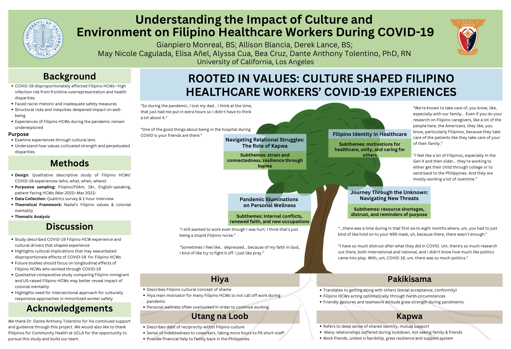

Poster · Sigma 36th International Nursing Research Congress · 2025
Filipino healthcare workers carried a heavy, often invisible burden during COVID-19; their culture was both a source of strength and a path through which inequities reached them.
Filipino healthcare workers were hit especially hard by COVID-19, facing high exposure on the front lines, racist rhetoric, and inadequate protection, yet their experiences were often hidden because data lump Filipinos into a broad “Asian” category. This study spoke with patient-facing Filipino healthcare workers about that time and found that their culture was both a source of strength and a channel through which inequities reached them. The findings point to a need for workplaces and health systems that recognize these cultural and social realities.
Qualitative study using a Qualtrics survey and one-hour interviews with seven Filipino and Filipino American, English-speaking, patient-facing healthcare workers about their experiences from March 2020 to March 2021. Participants were recruited through social media and Los Angeles health fairs.
Analysis drew on Sikolohiyang Pilipino (Filipino psychology), Nadal’s Filipino values, and colonial mentality to interpret how culture and environment intersected during the pandemic.
Lumping Filipinos into a broad “Asian” category hides group-specific risks.
Cultural values cultivated resilience among frontline workers.
Findings call for workplaces and systems that are culturally responsive.
